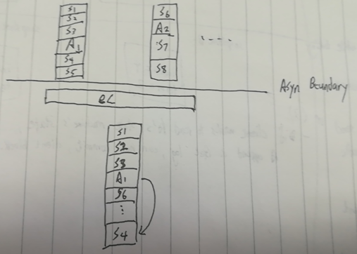
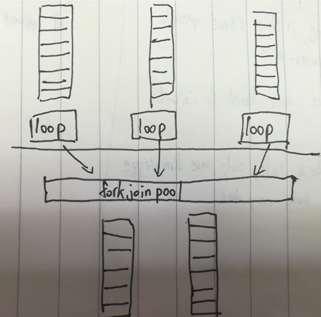

什么是IO
IO分成3部分, 创建, 组合, 执行
创建的API有
- pure(a: A): IO[A]
- delay(a: () => A): IO[A]组合的API有
- map(f: A => B): IO[B]
- flatMap(f: A => IO[B]): IO[B]执行的API有
- unsafeRunSync(io: IO[A]): AIO的创建
IO在创建的时候, 返回的是一些case class, 是AST的叶节点, 只记录做什么操作, 但是不执行.
IO的组合
IO在组合的时候, 返回的是一个AST
FlatMap(
FlatMap(
Delay(() => 3),
_ => Pure(42)
),
b => Pure(b)
)
val example1: IO[Int] = for {
a <- Delay(() => 3): IO[Int]
b <- Pure(42): IO[Int]
} yield bIO的执行
执行一个IO, 就是interpret对应的AST
unsafeRunSync这个函数, 就是一个interpreter, 这个interpreter包含一个run loop, 和一个stack
当遇到FlatMap节点的时候, push continuation到栈上, 然后继续递归
当遇到Delay节点的时候, 触发delay的副作用拿到结果, 这时候副作用已经没了, 变成Pure继续递归
当遇到Pure节点的时候, 从栈中pop一个continuation出来, 继续执行, 如果栈空的, 证明执行完了, 返回结果
IO的错误处理
加上RaiseError和HandleErrorWith两种叶节点, error handler也是push到栈上, 当触发delay的副作用产生error事, unwind stack找到error handler处理.
unsafeRunSync会block调用线程
unsafeRunSync就是一个AST interpreter的run loop, 如果AST里面包含
Delay(() => sleep(10); ???)在evaluate到这个节点的时候, 就会阻塞线程
如果Delay中的effect, 需要用额外的一个线程, 那么unsafeRunSync的调用线程和额外线程都被占用.
Async boundary
unsafeRunSync在evaluate到async boundary时, 交出run loop线程的控制权, 线程池会回收run loop交出的线程, 做其他的工作. 在时机合适时, 调度器会让run loop剩余的部分继续执行
Async boundary以上有m个logical thread, Async boundary以下有n个actual thread
调度器在async boundary之间做线程映射

是Cooperative multitasking, 每一个logical thread主动把资源让出来给其他人用.
Async节点
需要在AST中增加一个Async节点, 表示当evaluate到这个节点的时候, 可以暂停, 并把资源让出来.
Async需要记录的信息 - 什么时候可以继续执行 - 继续执行的时候执行什么内容
case class Async[+A](k: (Either[Throwable, A] => Unit) => Unit) extends IO[A]Async(cb => {
task(a).onComplete {
case Failure(exception) => cb(Left(exception))
case Success(value) =>
println(value)
cb(Right(value))
}
})(Either[Throwable, A] => Unit)是一个callback
调用cb(Left(exception))相当于通知调度器, 当前节点的结果是exception, 继续执行后面的内容
调用cb(Right(value))相当于通知调度器, 当前节点的结果是value, 继续执行后面的内容

cats-effect IO
final def unsafeRunSync(): A = unsafeRunTimed(Duration.Inf).getIORunLoop.step是evaluate直到遇到Async
final def unsafeRunTimed(limit: Duration): Option[A] =
IORunLoop.step(this) match {
case Pure(a) => Some(a)
case RaiseError(e) => throw e
case self @ Async(_, _) =>
IOPlatform.unsafeResync(self, limit)
case _ =>
// $COVERAGE-OFF$
throw new AssertionError("unreachable")
// $COVERAGE-ON$
}遇到Async的时候调用IOPlatform.unsafeResync(self, limit)
IOPlatform.unsafeResync用scala.concurrent.blocking函数, delegate到BlockContext做调度.